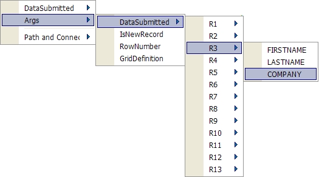
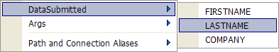

Using Grid Events
A grid component supports up to 8 different events. Each event will run Xbasic code, which can examine page variables, grid values, and take actions, including canceling the event. To write code to respond to grid events open the Grid > Events page of the menus.

Grid events can reference many variables. These variables include:
((|#Args_Variables|Args)) variables - contains the values of all controls in all rows
((|#Args_Variables|Args.Info)) variables - provides summary information about the grid
((|#DataSubmitted_Variables|DataSubmitted Variables)) - contains the values of all controls in the current row
((|#PageVariables_Variables|PageVariables)) - allows you to read the variables passed to the page
Result Variable - provides a mechanism to examine errors and terminate an event
SearchDataSubmitted Variables - contains the values from the controls in the search part of the grid
 Note : Record changes
made through a web component do not trigger
Field Rule record events.
Note : Record changes
made through a web component do not trigger
Field Rule record events.
|
Event |
Variables Available |
Description |
|
BeforeSearch |
Args.GridDefinition PageVariables SearchDataSubmitted |
This event fires after the user clicks the Search button on the Search Part of the grid. It allows you to modify the data submitted by the Search Part before the search is actually performed. You can examine the values in the search fields by referencing the SearchDataSubmitted variable. For example, if Lastname is one of the search fields, then you can see what value the user entered into this field by examining SearchDataSubmitted.Lastname. If you make a change to this variable, you can, in effect, change the value that the grid will search for. |
|
AfterSearch |
Args.GridDefinition Args.Info PageVariables SearchDataSubmitted |
This event fires after the grid has performed a search. It allows you to examine how many records (if any) were found by the search and take an action. The number of records found by the search is contained in the Args.Info.TotalRecords variable. |
|
BeforeValidateExistingRecords |
Args.DataSubmitted Args.GridDefinition Args.IsNewRecord Args.RowNumber DataSubmitted PageVariables |
This event fires after the user has pressed the Submit button to update or delete existing records, but before the grid validates the data in existing records. The event is fired for each row of existing data. It fires regardless of whether or not the data in the grid rows was modified by the user. |
|
Args.DataSubmitted Args.GridDefinition Args.IsNewRecord Args.RowNumber DataSubmitted PageVariables |
This event fires after the user has pressed the Submit button to insert new records but before the grid validates data in new records. | |
|
CanUpdateRecord |
Args.DataSubmitted Args.GridDefinition Args.IsNewRecord Args.RowNumber DataSubmitted PageVariables Result |
This event fires before the grid updates an existing record. It allows you to abort the update if certain conditions have not been met. Note that the event only fires if the row is dirty. i.e. the user has made at least one change to a field in the row.
|
|
CanDeleteRecord |
Args.DataSubmitted Args.GridDefinition Args.IsNewRecord Args.RowNumber DataSubmitted PageVariables Result |
This event fires before the grid deletes an existing record. It allows you to abort the delete if certain conditions have not been met. |
|
CanInsertRecord |
Args.DataSubmitted Args.GridDefinition Args.IsNewRecord Args.RowNumber DataSubmitted PageVariables Result |
This event fires before the grid inserts a new record. It allows you to abort the insert if certain conditions have not been met.
|
|
AfterUpdateRecords |
Args.DataSubmitted Args.GridDefinition PageVariables |
This event fires after the user presses the Submit button to update the database. The event only fires if there were no errors updating the database. |
Writing Code to Respond to an Event
Select Grid > Events in the Grid Builder.
Select the event you want to modify in the Events list.
Optionally, to erase any previous edits, click Undo edits > Yes.
Optionally, to restore the event template, click Default Function Prototype.
Place your Xbasic code between the with PageVariables and end with statements.
|
function BeforeValidateExistingRecords as v (DataSubmitted as P, Args as p, PageVariables as p) with PageVariables ... your code here end with end function |
To reference the value of any field (in the search part or in the grid), Args value, alias value, or grid property ( Args.GridDefinition.PropertyName ), click Insert and select the variable you want to use.
 Note : Unless a control
has a value, the corresponding variable will not exist. This is particularly
important when dealing with check boxes. Use EVAL_VALID()
to check if the variable exists, before referring
to it in an expression.
Note : Unless a control
has a value, the corresponding variable will not exist. This is particularly
important when dealing with check boxes. Use EVAL_VALID()
to check if the variable exists, before referring
to it in an expression.
The Args variables provide summary information about the grid.
|
Variable |
Type |
Description |
|
Args.IsNewRecord |
L |
Indicates whether the current record is a new record. |
|
Args.RowNumber |
N |
The current row number. |
|
Args.GridDefinition |
P |
The parent pointer for grid properties. |
|
Args.Info.TotalPages |
N |
The number of pages in the grid. |
|
Args.Info.CurrentPage |
N |
The current page of the grid that is being displayed. |
|
Args.Info.TotalRecords |
N |
The number of records in the grid. |
|
Args.Info.RecordsPerPage |
N |
The number of records to show per grid page. |
|
Args.Info.Database_Type |
C |
In the case of an ADO compatible database, this is the name of the database type as reported by the ADO driver. So, for Microsoft Access, it is "MS Jet". |
|
Args.Info.HasEmptyRows |
L |
Whether the current grid page has any empty rows. |
|
Args.Info.FirstEmptyRow |
N |
The number of the first row in the current grid page that is empty. |
|
Args.DataSubmitted |
P |
The Args.DataSubmitted dot variable contains the values of all controls in all rows.
|
The Args.DataSubmitted variables allow you to read the value of any editable control in the grid. This means that the grid control must meet 2 requirements.
It can be any type except a label or custom control.
Its Column Properties > Hide Column property must be set to FALSE.

 Note
: Summary variables are only available for custom controls.
Note
: Summary variables are only available for custom controls.
The DataSubmitted dot variable contains the values of all controls in the current row.

 Note
: Dialog components use the CurrentForm
alias to refer to variables.
Note
: Dialog components use the CurrentForm
alias to refer to variables.
Any variable that is passed to the page, after the "?" in the URL is available in the PageVariables collection. Any variable that you DIM in a segment of Xbasic code that runs before the grid component is loaded, is also available in the PageVariables collection. You can references these variables with the syntax PageVariables.VariableName. When inside the with PageVariables ... end with block, you can directly reference VariableName.
The Result dot variable provides a mechanism to trap and terminate an event if an error occurs.
|
Variable |
Type |
Description |
|
Result.Cancel |
L |
This value is FALSE by default. Changing it to TRUE causes the event to terminate. |
|
Result.ErrorHTML |
C |
Contains the text of any HTML error. |
Examples
This event handler sets the Company field to "Default Company" if it has been left blank:
|
function BeforeValidateExistingRecords as v (DataSubmitted as P, Args as p, PageVariables as p) with PageVariables end function |
This event handler counts the number of times a page has been submitted:
|
function AfterUpdateRecords as v (Args as P, PageVariables as P) with PageVariables end function |
The following example assumes that you have a grid based on the Invoice_items table of the AlphaSports database. Before you let a user add a new record you want to check that:
The user entered a non-blank product_id.
The user entered a valid product_id.
The user entered a quantity that does not exceed the qty_in_sto field in the product table.
If all of the above conditions were met then you want to deplete the qty_in_sto field in the product table.
|
function CanInsertRecord as v (DataSubmitted as P, Args as p, PageVariables as p, Result as p) with PageVariables if (DataSubmitted.PRODUCT_ID = "") then Result.ErrorHTML = "You have not specified a product id." exit function end if dim t as P dim rec as N dim qty_on_hand as N dim newQty as N t = table.open("PathAlias.ADB_Name\Product.dbf") t.order("Product_id") rec = t.fetch_find(datasubmitted.product_id) if (rec < 0) then Result.Cancel = .t. Result.ErrorHTML = "Invalid product id: " + DataSubmitted.PRODUCT_ID t.close() exit function end if qty_on_hand = t.Qty_in_sto if (val(DataSubmitted.QUANTITY) > qty_on_hand) then Result.Cancel = .t. Result.ErrorHTML = "You have specied a qty of " + DataSubmitted.QUANTITY + " but we only have " + qty_on_hand + " in stock." t.close() exit function end if 'deplete the quantity in stock field t.change_begin() newQty = (t.Qty_in_sto - val(DataSubmitted.QUANTITY)) t.Qty_in_sto = newQty t.change_end(.t.) t.close() Result.Cancel = .f. Result.ErrorHTML = "" end with end function |
See Also
Creating a Grid Component, Locking Individual Records
Supported By
Alpha Five Version 7 and Above
Limitations
Web publishing applications only.